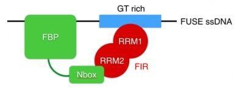

Tutorials
NMR TITAN: 2D lineshape analysis
FBP Nbox Walkthrough
 This is an illustrated walthrough of the analysis of a titration of 15N-labelled FIR RRM1-RRM2 with the FBP Nbox peptide, acquired to investigate the interaction of FIR RRM1-RRM2 with FBP and FBP3 as part of a broader study of the FUSE system for regulation of c-myc transcription during the cell cycle (Cukier et al. NSMB 2010). The data and analysis transcripts are provided in the directory examples/FBPNbox/. .
2-State Binding Simulation
 TITAN is designed with a flexible core of simulation and fitting routines, which can be
combined with a variety of pulse programs and binding models. A variety of binding models are available.
In this example we simulate a simple two-state protein-ligand binding reaction. This is an illustrated
walkthrough of the example script examples/simulations/examples_twostate/m/ that is provided
in the directory.
TITAN is designed with a flexible core of simulation and fitting routines, which can be
combined with a variety of pulse programs and binding models. A variety of binding models are available.
In this example we simulate a simple two-state protein-ligand binding reaction. This is an illustrated
walkthrough of the example script examples/simulations/examples_twostate/m/ that is provided
in the directory.